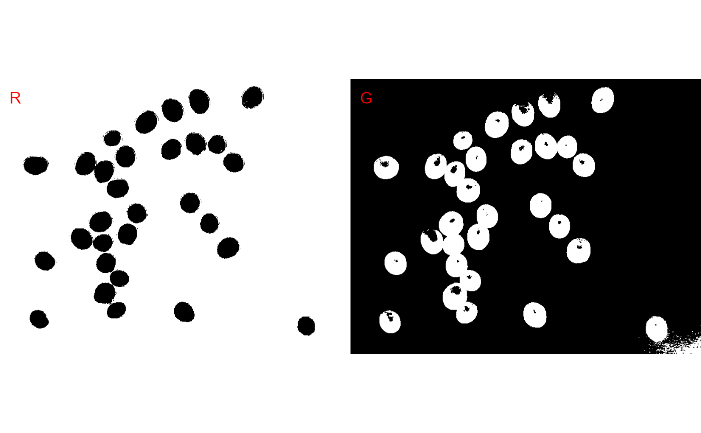

Reduce a color, color near-infrared, or grayscale images to a binary image using a given color channel (red, green blue) or even color indexes. The Otsu's thresholding method (Otsu, 1979) is used to automatically perform clustering-based image thresholding.
Usage
image_binary(
img,
index = "R",
r = 1,
g = 2,
b = 3,
re = 4,
nir = 5,
return_class = "ebimage",
threshold = c("Otsu", "adaptive"),
k = 0.1,
windowsize = NULL,
has_white_bg = FALSE,
resize = FALSE,
fill_hull = FALSE,
erode = FALSE,
dilate = FALSE,
opening = FALSE,
closing = FALSE,
filter = FALSE,
invert = FALSE,
plot = TRUE,
nrow = NULL,
ncol = NULL,
parallel = FALSE,
workers = NULL,
verbose = TRUE
)Arguments
- img
An image object.
- index
A character value (or a vector of characters) specifying the target mode for conversion to binary image. See the available indexes with
pliman_indexes()andimage_index()for more details.- r, g, b, re, nir
The red, green, blue, red-edge, and near-infrared bands of the image, respectively. Defaults to 1, 2, 3, 4, and 5, respectively. If a multispectral image is provided (5 bands), check the order of bands, which are frequently presented in the 'BGR' format.
- return_class
The class of object to be returned. If
"terrareturns a SpatRaster object with the number of layers equal to the number of indexes computed. If"ebimage"(default) returns a list ofImageobjects, where each element is one index computed.- threshold
The theshold method to be used.
By default (
threshold = "Otsu"), a threshold value based on Otsu's method is used to reduce the grayscale image to a binary image. If a numeric value is informed, this value will be used as a threshold.If
threshold = "adaptive", adaptive thresholding (Shafait et al. 2008) is used, and will depend on thekandwindowsizearguments.If any non-numeric value different than
"Otsu"and"adaptive"is used, an iterative section will allow you to choose the threshold based on a raster plot showing pixel intensity of the index.
- k
a numeric in the range 0-1. when
kis high, local threshold values tend to be lower. whenkis low, local threshold value tend to be higher.- windowsize
windowsize controls the number of local neighborhood in adaptive thresholding. By default it is set to
1/3 * minxy, whereminxyis the minimum dimension of the image (in pixels).- has_white_bg
Logical indicating whether a white background is present. If
TRUE, pixels that have R, G, and B values equals to 1 will be considered asNA. This may be useful to compute an image index for objects that have, for example, a white background. In such cases, the background will not be considered for the threshold computation.- resize
Resize the image before processing? Defaults to
FALSE. Use a numeric value as the percentage of desired resizing. For example, ifresize = 30, the resized image will have 30% of the size of original image.- fill_hull
Fill holes in the objects? Defaults to
FALSE.- erode, dilate, opening, closing, filter
Morphological operations (brush size)
dilateputs the mask over every background pixel, and sets it to foreground if any of the pixels covered by the mask is from the foreground.erodeputs the mask over every foreground pixel, and sets it to background if any of the pixels covered by the mask is from the background.openingperforms an erosion followed by a dilation. This helps to remove small objects while preserving the shape and size of larger objects.closingperforms a dilatation followed by an erosion. This helps to fill small holes while preserving the shape and size of larger objects.filterperforms median filtering in the binary image. Provide a positive integer > 1 to indicate the size of the median filtering. Higher values are more efficient to remove noise in the background but can dramatically impact the perimeter of objects, mainly for irregular perimeters such as leaves with serrated edges.
Hierarchically, the operations are performed as opening > closing > filter. The value declared in each argument will define the brush size.
- invert
Inverts the binary image, if desired.
- plot
Show image after processing?
- nrow, ncol
The number of rows or columns in the plot grid. Defaults to
NULL, i.e., a square grid is produced.- parallel
Processes the images asynchronously (in parallel) in separate R sessions running in the background on the same machine. It may speed up the processing time when
imageis a list. The number of sections is set up to 70% of available cores.- workers
A positive numeric scalar or a function specifying the maximum number of parallel processes that can be active at the same time.
- verbose
If
TRUE(default) a summary is shown in the console.
References
Otsu, N. 1979. Threshold selection method from gray-level histograms. IEEE Trans Syst Man Cybern SMC-9(1): 62–66. doi:10.1109/tsmc.1979.4310076
Shafait, F., D. Keysers, and T.M. Breuel. 2008. Efficient implementation of local adaptive thresholding techniques using integral images. Document Recognition and Retrieval XV. SPIE. p. 317–322 doi:10.1117/12.767755
Author
Tiago Olivoto tiagoolivoto@gmail.com
Examples
library(pliman)
img <- image_pliman("soybean_touch.jpg")
image_binary(img, index = c("R, G"))
